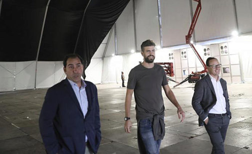

Un total de 42 millones de euros, más de 100.000 visitantes, 600 empleos... La Copa Davis, que se celebra por primera vez durante una semana en Madrid, tendrá un importante impacto económico en la ciudad. Del 18 al 24 de noviembre, las 18 mejores selecciones de tenis del mundo competirán por la ensaladera en la Caja Mágica. La promotora del evento, la empresa Kosmos que capitanea el futbolista del Barcelona, Gerard Piqué, calculan que 109.000 personas acudirán al torneo, de los que 44.000 vendrán de fuera: un 26% desde distintas partes de España y un 15%, desde el extranjero. La Comunidad de Madrid da una cifra más elevada y estima que la cantidad de asistentes puede alcanzar los 185.000.
El gigante de aerolíneas IAG, el grupo aéreo que engloba a Iberia, British Airways, Vueling, Air Lingus y Level, y Globalia han anunciado la compra de la española Air Europa por 1.000 millones de euros, que se abonarán en efectivo al cierre de la operación, según ha anunciado este lunes el holding aéreo. Se espera que el cierre de la transacción tenga lugar en la segunda mitad del 2020 tras obtener las autorizaciones oportunas. En concreto, el hub de Madrid de IAG se transformará en un "verdadero rival" para los cuatro hubs más grandes de Europa: Ámsterdam, Frankfurt, Londres Heathrow y París Charles De Gaulle. La marca Air Europa será conservada inicialmente y la sociedad seguirá siendo un centro de ingresos autónomo dentro de Iberia, dirigida por su consejero delegado, Luis Gallego.
En Palma hay aproximadamente 8.000 árboles etiquetados como de riesgo medio de caída con un total de 3.000 palmeras entre alineación y zonas verdes que, junto a los pinos, son las que mas padecen el efecto de los fuertes vientos, como el de la jornada de ayer. De hecho, este mismo año se han talado varios ejemplares de palmeras y pinos en Paseo de Sagrera y Plaza de la Reina entre otros, por su mal estado. Precisamente ayer, el infortunio y el fuerte viento que barrió toda Baleares en estado de alerta amarilla durante toda la jornada se cebaron con una mujer de nacionalidad brasileña de 40 años de edad que al filo de las 12.00 horas paseaba junto a su pareja y su hija de 7 años por la zona de Dalt Murada, frente a las escalinatas de La Seu, en el popular Parc de la Mar de Palma. Una racha de viento quebró por la mitad el tronco de una de las palmeras datileras (Phoenix dactylifera) que jalonan la primera línea marítima de la capital balear cuya copa impactó de lleno contra la víctima afectando también a la menor que le acompañaba que resultó atrapada y herida en el siniestro.